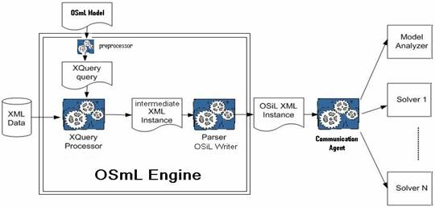
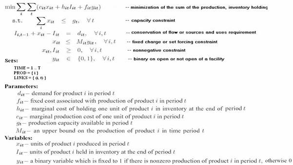
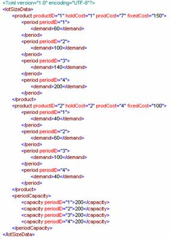
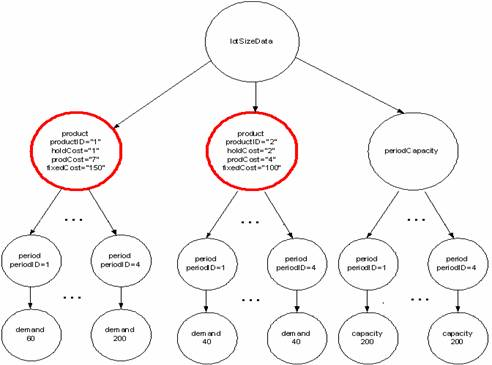

|
Optimization Services modeling Language (OSmL)
OSmL is still under research and only prototypes are being built to show proof-of-concept.
OSmL is among the many derived researches from the Optimization Services project. OSmL is a computer modeling language for mathematical optimization. This language allows mathematical model developers to formulate complex and large-scale optimization problems in a concise and efficient way. OSmL is based upon the W3C XQuery standard and is designed to convert raw data in XML format into problem instances that conform to the Optimization Services instance Language (OSiL) standard. An optimization instance represented in OSiL can be solved with any standard solver that is Optimization Services compatible. Thus, OSmL is particularly well suited for optimization over distributed systems.
Notice that OSmL itself is not an XML dialect, but rather a customized implementation of XQuery. XQuery provides a concise query language and is designed to quickly and efficiently extract chunks of data – much like SQL for relational databases. Unlike other OSxL languages, OSmL is not a low-level instance language. OSmL is a high-level user friendly modeling language. An advantage of the OSmL approach is that people can easily share and reuse OSmL models regardless of computing platform. All of the required software is open source and available on all major platforms.
Motivation
XML is popular and powerful and is rapidly becoming an accepted format for transferring and storing data. Currently almost all databases and spreadsheets are xml-enabled. This means that even if the stored data are not in native XML form, they can at least be exported in XML formats. The XML output can then be retrieved with XQuery. One might argue that mathematical modeling is also about data. Indeed, a mathematical programming modeling language, and associated solver tools, will not be used unless they are closely integrated with corporate data. The creation of the OSmL modeling language is motivated by two factors. First is the ubiquity of XML and the existence of tools to easily transform the non-XML data into an XML format. Second is the availability of many powerful open source platform independent tools for taking XML data stored in one format and transforming it into another XML format.
Four Paradigms of Combining XML with Optimization
It is common practice to store data in a relational database system. Two aspects of commercial relational database systems are 1) the data are stored in multiple tables or relations, and 2) the files containing the data are typically binary files. XML data is 1) stored using a tree structure, and 2) stored as a text file containing both tags and the data.
There are four paradigms to incorporating XML into mathematical modeling of optimization problems:
- Use XML to represent an optimization instance; this is what Optimization Services is all about.
- Develop an XML modeling language dialect; this is what Optimization Services avoids.
- Enhance modeling languages with XML features such as XPath; this is a recommendation from Optimization Services to enable existing modeling languages to access XML data.
- Use XML technologies to transform XML data into a problem instance; this is the approach taken by OSmL, which is a derived research of Optimization Services.
The OSmL approach is to take as input the XML files that contain the problem instance data and then transform the input data files into a standard OSiL instance output. OSmL leverages on XQuery for the data transformation. XQuery provides powerful algebraic modeling features, e.g. sets, loops, if-then, union, intersection, and library modules. These are accepted W3C standards and are what makes the OSmL modeling language symbolic, general, concise and understandable.
We have been emphasizing the fact that OSmL is XQuery based, but OSmL is a bit more than an XQuery language. OSmL has extra pre-built constructs tailored for optimization problems. For example, the relational operators “<”, “<=”, “>” and “>=” are represented in XQuery as “>”, “>=”, “<” and “<=” to avoid conflicts with the XML tags (< >). As the relational operators appear very often in optimization, OSmL allows users to use “<”, “<=”, “>” and “>=” directly and it has a “preprocessor” to detect these operators and convert them to the XQuery language specification. Also OSmL adds some macros such as the “SUM” function, as again these macros provide extra convenience for mathematical modeling. The OSmL preprocessor expands these macros to XQuery equivalents.
A modeler can still directly use the standard XQuery representations to construct an optimization model without the OSmL macros. In this situation, OSmL is a pure XQuery language.
A pure XQuery (original or preprocessed) is sent to an XQuery processor and compiled into an intermediate XML instance. The immediate instance is converted into the OSiL instance and sent out to an Optimization Service using a standard OS communication agent.

Numerous auxiliary software packages are available that implement XQuery and XPath. There are two major camps: Microsoft .NET and Java. The most recent release of the Microsoft development tool, Visual Studio .NET, contains numerous classes for manipulating and transforming XML data. These classes are available to all of the .NET languages. Indeed, a major advantage of using .NET software is that Microsoft has done such an excellent job of integrating XML into Visual Studio .NET. The downside of .NET is that .NET software runs on the Windows platform (although Ximian has announced the launch of the Mono project to create an open source implementation of the .Net development framework). However, the actual XQuery files are platform independent. There is no problem with sharing model files among users of different platforms.
A number of Java open source XQuery and XPath tools are also available. There is Saxon (for XQuery and XPath) written by Michael Kay and Xalan (for XSLT, a C++ version is also available) by the Apache organization. Both Saxon and Xalan can be used from the command line or called from a Java Servlet or a standalone Java program. Both Xalan and Saxon implement the Java API for XML Processing (JAXP). This makes it very convenient to write portable software that can call either Saxon or Xalan to transform XML. There is also XML Spy from Altova and Stylus Studio from Progress Software, which are a proprietary XML development environments. Both are equipped with some very nice graphical tools for constructing XML-related files.
The multiproduct dynamic lot sizing example
We illustrate OSmL features with a multiproduct dynamic lot sizing model. We assume that the input data for the model is in a single XML file. This assumption is not necessary; it is made only for ease of exposition. Assume there are two products with a four period planning horizon and that inventory holding cost, marginal production cost, and fixed production cost depend on product but not time period. The model and the corresponding XML data are illustrated in the following two figures.


The costs (fixedCost, holdCost, prodCost) are depends on only productID. The demand data are functionally dependent on productID and periodID. The capacity data are functionally dependent on only periodID. The following figiure is a graphical illustration of the dynamic log sizing data. The two highlighted circles indicate the product set.

Sets, indices and data
The first step in building an algebraic model using a modeling language is to identify the primitive sets. The primitive sets often correspond to the indices on the decision variables. In the relational database world these are often attributes that correspond to keys in a relation. Algebraic modeling languages have commands to create sets. Sets may be either primitive or derived sets through such operations as Cartesian product or set union. In the above dynamic lot sizing example, primitive sets correspond to products and time periods. A derived set is the Cartesian product of the product and time period sets. Here is an example of set declarations in LINGO:
SETS:
product /1, 2/;
period /1..4/;
demand(product, period);
ENDSETS
The analogous concept in the XML world is the XPath node-set. Node sets corresponding to product, period, and demand are:
/lotSizeData/product
/lotSizeData/periodCapacity/capacity[@periodID]
/lotSizeData/product/period/demand
In an algebraic modeling language, once the sets are identified, parameters and variables are associated with the sets and referenced by indices. For example, considering only parameters, in the lot sizing example we have in LINGO:
SETS:
product /1, 2/: holdCost, prodCost, fixedCost;
period /1..4/: capacity;
prodperiod(product, period): demand;
ENDSETS
For example, holdCost(1) is the holding cost of the first product. The holding cost node-set is referenced in XPath by:
/lotSizeData/product/@holdCost
The position() function in XPath is then used as an index. For example, the holding cost of the first product is:
/lotSizeData/product[position()=1]/@holdCost
or, if we define $product = /lotSizeData/product, we can write:
$product[position()=1]/@holdCost
Similarly, the demand for product 2 in periods 3 and 4 is given by:
/lotSizeData/product[position()=2]/period[position()>2]/demand
or, in terms of $product, we can write:
$product[position()=2]/period[position()>2]/demand
One advantage of nesting time period nodes within product nodes in the lot size XML data over a more traditional tabular approach is that we can use the position function to easily index both the product and time periods. An important aspect of this approach is that we are using the input XML for data only; the input files do not contain any information about constraints or variables. The input XML files need only contain all of the model sets and parameters (or sufficient information to generate them).
OSmL examples and comparison with other modeling languages
The following figure shows the dynamic lot sizing model in AMPL. AMPL currently does not have built in support to retrieve the dynamic lot sizing XML data shown above, so the model is non-working. It is shown here for illustration and comparison with the OSmL language.
The following figure shows the dynamic lot sizing model in OSmL and how it retrieves the XML data. It is a working model.
The following table gives a side-by side comparison between AMPL and OSmL on different constructs.
|
AMPL (no data retrieval) |
OSmL (and XML data retrieval) |
Sets and parameters, |
param T;
set PROD;
set LINKS = {PROD, 1..T};
param HC {PROD} ;
param FXC {PROD} ;
param CAP {1..T} ;
param DEM {LINKS};
param PCOST {PROD, 1..T} ; |
let $capacity := doc("lotsizedata.xml")/lotSizeData/periodCapacity/capacity
let $T := count($capacity)
let $products := doc("lotsizedata.xml")/lotSizeData/product [ (1, 2)]
let $N := count($products)
let $PROD := (1 to $N)
let $HC := $products/@holdCost
let $FXC := $products/@fixedCost
let $CAP := $capacity/text()
let $DEM := $products/period/demand
let $PCOST := data($products/@prodCost) |
Variables |
var x {PROD, 1..T} >= 0;
var I {PROD, 0..T} >=0;
var y {PROD, 1..T}binary; |
<variables>{for $i in (1 to $N), $t in (1 to $T) return
(<var name="X[{$i},{$t}]"/>,
<var name="I[{$i},{$t}]"/>,
<var name="Y[{$i},{$t}]" type="B" />) }
</variables> |
Objective |
minimize Total_Cost:
sum {i in PROD} I[i, 0] +
sum {i in PROD, t in 1..T} (PCOST[i, t]*x[i, t] +
HC[i]*I[i, t] +
FXC[i]*y[i, t]); |
<obj maxOrMin="min" name="Total_Cost">
SUM(for $i in (1 to $N), $t in (1 to $T) return
{$PCOST[$i]}*X[{$i},{$t}] +
{$FXC[$i]}*Y[{$i},{$t}] +
{$HC[$i]}*I[{$i},{$t}])
</obj> |
Initial inventory constraints |
subject to Init_Inv {i in PROD}:
I[i, 0] = 0.0; |
{ for $i in $PROD return
<con name="inventory[{$i}]"> I[{$i},0] = 0 </con>} |
demand constraints (or balance constraints) |
subject to Demand {i in PROD, t in 1..T}:
x[i, t] + I[i, t - 1] - I[i, t] =
DEM[i, t]; |
{for $i in $PROD, $t in (1 to $T)
let $demand := ($products[$i]/period[@periodID=$t]/demand/text())
return <con name="demand[{$i},{$t }]">
X[{$i},{$t}] + I[{$i},{$t - 1}] - I[{$i},{$t}] = {$demand} </con>} |
Fixed charge constraints |
subject to Fixed_Charge
{i in PROD, t in 1..T}:
x[i, t] <= CAP[ t]*y[i, t]; |
{for $t in (1 to $T), $i in (1 to $N) return
<con name="Fixed_charge[{$i},{$t }]">
X[{$i},{$t}] <= {$CAP[$t]}*Y[{$i},{$t}] </con>} |
Capacity constraints |
subject to Capacity {t in 1..T}:
sum {i in PROD}
x[i, t] <= CAP[ t]; |
{for $t in (1 to $T) return
<con name="capacity[{$t}]"> SUM(for $i in (1 to $N) return
X[{$i},{$t}]) <= {$CAP[$t]} </con>} |
The basic “set” in the XQuery-based OSmL language is an ordered sequence. All “XQuery variables” begin with a “$” sign. An XQuery engine evaluates what is in { }. Decision variables are declared in <variables> ... </variables>. OSmL, however, does not require declaring variables; any variable not declared assumes certain default features (e.g. type=”C”, lb=”0”). An objective function is constructed in <obj> ... </obj> and each constraint is added in <con> ... </con>. To make mathematical modeling easier, we added several macros to the standard XQuery language. For example, the SUM function as we use it is not provided by XQuery. A preprocessor inside the OSmL compiler converts the macros into standard XQuery language.
Since OSmL is XQuery-based, we can automatically inherit many powerful features from the XQuery language. For example, we can use built-in Java functions:
declare namespace math="java:java.lang.Math";
The objective function in OSmL with a “square root function” on fixed cost may look:
<obj maxOrMin="min" name="Total_Cost">
SUM(for $i in (1 to $N), $t in (1 to $T) return
{$PCOST[$i]}*X[{$i},{$t}] +
{math:sqrt($FXC[$i])}*Y[{$i},{$t}] +
{$HC[$i]}*I[{$i},{$t}])
</obj>
We can also use many other built-in features of XQuery such as the “where” clause to put conditions on sets or “if–then” logic for more complex data manipulation.
Getting data
XQuery and XPath are designed to work with input data in an XML format. In this section we show that there are numerous tools for transforming non-XML data into XML data. Most of the data used in a math program will reside in a
• spreadsheet
• desktop database (e.g. Microsoft Access)
• ASCII flat file
• enterprise database (e.g. DB2, Oracle, SQL Server)
• XML file
We discuss converting each source into XML. There are several options with a spreadsheet or desktop database. If the spreadsheet or database is part of Microsoft Office 2002 (or later) it is possible to directly export each table in the database, or range in the spreadsheet, as an XML file. If the desktop spreadsheet or database are ODBC or OLE-DB compliant, then one can write a program in a procedural language such as C++ or Java to access the data using ODBC or OLE-DB, read it into memory, and then use DOM (document object module) to create an XML representation of the data. There is some overhead in creating the DOM and storing it in main memory. An alternative approach is to write a custom SAX parser and feed the information directly into a JAXP compliant XSLT processor. DOM and SAX are alternative APIs for processing XML.
If the flat file is an ASCII flat file, several options exist. First, one could import the flat file into a desktop database such as Microsoft Access and then save it as an XML file. A second option is to write a C++ or Java program to parse the file and then use DOM or SAX create an XML representation of the data.
Much of the data for large models is stored in enterprise corporate databases. Fortunately, the major database vendors are adding features to their products that allow the user to submit an SQL query to the database and get the result back in XML format. There are JDBC drivers for the most widely used databases. Thus, one could write a Java program and use JDBC and SQL to query the database, get the result as XML, and then transform the XML using a JAXP transformation engine such XALAN or Saxon. This process is also easily carried out using Visual Studio .NET. There are many classes available to any of the .NET languages for reading data in XML format from a relational database and then transforming it to XML.
Ideally, the input data is initially in XML format. However, some XML structures are more amenable to transformation into a mathematical model than others. Of course most XML transformation tools are designed to transform one XML file into another without much difficulty.
There are products expressly for the purpose of accessing data stored in different formats and viewing the data as XML. Two such products include BEA’s Liquid Data and IBM’s XPeranto. The trend is obvious: make it easy to gather data from various sources and convert it into XML. This makes the OSmL methodology we are proposing even more viable over time.
|

{kind=link}
{kind=link}
{kind=link}
{kind=link}
{kind=link}
{kind=link}